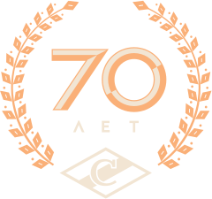

«Спартак». Есть в этом слове что-то по-настоящему притягательное, то, что заставляет учащенно биться сердце, то, что превращает серые будни в искрометный праздник. И эти два родных цвета – красный и белый – для миллионов людей давно уже потеряли смысл физического явления, а превратились в смысл жизни. «Спартак» – он как наша страна. В его 70-летней истории были и победные страницы, и годы безвременья. Но у него всегда были болельщики, все те люди, что находились рядом с командой и в радости, и в горе. И пока не иссякла эта болельщицкая река, пока приходят на трибуны взрослые и дети, влюбленные в «Спартак», клуб будет жить.
Оглавление
-
1946–1951
Они были первыми -
1951–1956
Расформирование хоккейной команды -
1956–1961
Создание тройки Старшинова -
1961–1966
Первый триумф «Спартака» -
1966–1971
Два «золота» за пять лет -
1971–1976
Четвертое «золото» красно-белых -
1976–1981
Начало эпохи Бориса Кулагина -
1981–1986
Вечная борьба с ЦСКА -
1986–1991
Последнее пополнение клубной коллекции -
1991–1996
Новая страна и новые трудности -
1996–2001
Расставание с Суперлигой -
2001–2006
Вспомнить вкус плей-офф -
2006–2011
Харизматичный Ржига -
2011–2016
Очередное возрождение и борьба за болельщиков
Над выпуском
работали
- Владимир Самохин Ответственный редактор
- Андрей Горбунов Дизайн
- Александр Малышев Текст
- Татьяна Коростелева Верстка
- Дмитрий Терещенко Подготовка видеоархива
- Олег Воронин Консультант